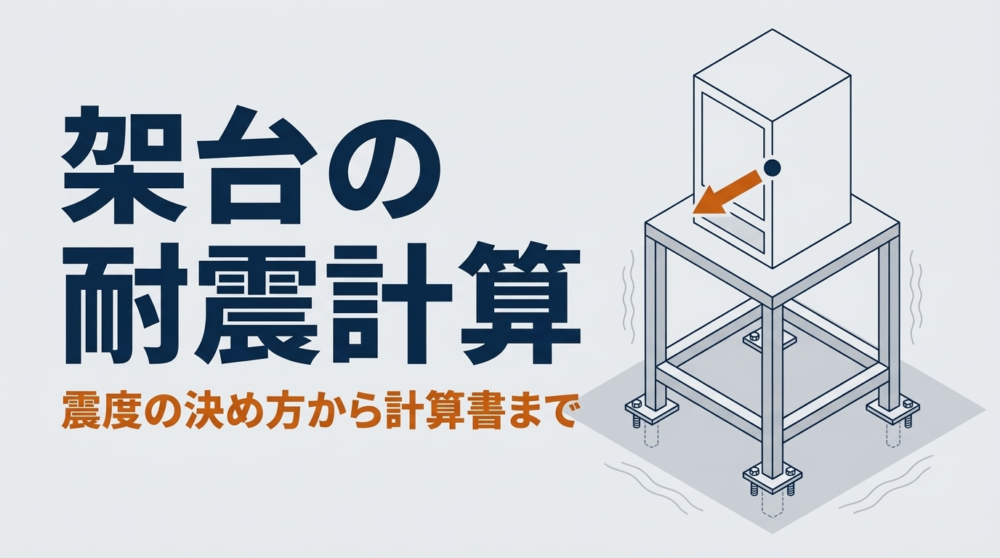

「この架台、耐震計算書も出してください」。架台の設計は終わったのに、客先から急に耐震計算を求められることがあります。ふだんの強度計算と何が違うのか、地震の力の大きさをどう決めるのか、一から調べると時間がかかります。
本記事では、架台の耐震計算の方法を、例題で解説します。中心は、地震の力を決める設計用水平震度の決め方です。客先の指定の確かめ方と、指定がないときの考え方（設置する階と耐震クラス）を説明し、柱の応力とアンカーの引き抜きまでを順に求めます。例題の架台は、本シリーズの「架台の強度計算の方法と例」と同じものです。最後に、客先に出す耐震計算書の項目もまとめます。強度計算書の見本（11ページ）もあわせてご覧ください。
計算例の適用範囲
- 本記事は、工場の床に置く生産設備の4本脚の架台を例に、耐震計算の基本的な考え方を説明するものです。計算した架台の安全性を保証するものではありません
- 震度は客先の指定が優先です。指定がない場合の参考として、建築設備の耐震設計・施工の指針（日本建築センター）の考え方を紹介します
- 梁、溶接部、ベースプレート、設備本体の固定は別に確かめてください。床や建物が耐えるかは、建物の設計者の確認が必要です
この記事でわかること
- 架台の耐震計算と、ふつうの強度計算の違い
- 設計用水平震度の決め方（客先の指定、指定がないときの考え方）
- 地震の力から、柱の応力とアンカーの引き抜きを求める手順
- 工場の1階と2階で、同じ架台の結果がどれだけ変わるか
- 客先に出す耐震計算書に書く項目
架台の耐震計算とは｜ふつうの強度計算との違い
ふつうの強度計算では、設備の重さが下向きにかかるものとして、梁の曲げとたわみ、柱の座屈を確かめます。耐震計算では、これに加えて、地震で生じる横向きの力と縦向きの力を考えます。
地震の力は、設備の重さに「震度」という係数を掛けて求めます。震度0.4なら、重さの40％の力が横からかかると考えます。この横の力は、設備の重心にかかります。重心が架台の上面より高いと、横の力は架台を倒す向きにも働きます。そのため、耐震計算で確かめることは、次の3つになります。
- 柱の強さ：横の力による曲げと、縦の力と倒す力で増えた圧縮
- 倒れ：倒そうとする力が、重さの止める力を上回らないか
- アンカー：浮き上がる側のアンカーボルトが、引き抜かれないか
この章のまとめ
- 耐震計算では、下向きの重さに加えて、地震の横の力と縦の力を考える
- 地震の力は「重さ × 震度」。横の力は設備の重心にかかる
- 確かめるのは、柱の強さ、倒れ、アンカーの引き抜きの3つ
設計用水平震度の決め方
震度をいくつにするかで、結果は大きく変わります。決める順番は、まず客先の指定を確かめ、指定がなければ参考になる考え方で決めて、客先と合意する、です。
まず、客先の仕様書で震度が指定されていないか確かめる
工場の生産設備をのせる架台では、客先の設備仕様書や社内の基準で、「水平震度0.6」「水平震度1.0」のように震度が決められていることがあります。指定があれば、その値で計算します。指定がないときは、どの考え方で震度を決めるかを客先に相談し、合意した値と根拠を計算書に書いておきます。
指定がないときの参考｜建築設備の指針の考え方
建物に据え付ける設備の耐震では、建築設備の耐震設計・施工の指針の「局部震度法」の考え方がよく参考にされます。地震の力の大きさを、置く階と、設備の重要度（耐震クラス）から決める方法です。
設計用水平震度 KH ＝ Z × KS 設計用鉛直震度 KV ＝ KH ÷ 2
Z：地域係数、KS：設計用標準震度（設置する階と耐震クラスで決まる）
建物は、上の階ほど大きく揺れます。そのため、同じ設備でも、置く階によって震度が変わります。指針では、次の表の値を使います。
| 設置する階 | 耐震クラスS | 耐震クラスA | 耐震クラスB |
|---|---|---|---|
| 上層階、屋上及び塔屋 | 2.0 | 1.5 | 1.0 |
| 中間階 | 1.5 | 1.0 | 0.6 |
| 地階及び1階 | 1.0 | 0.6 | 0.4 |
工場でいえば、1階の床に置く設備は「地階及び1階」、2階建ての工場の2階の床に置く設備は「上層階」（最上階）にあたります。3階建て以上の建物では、上層階と中間階の範囲が階数で決まっているので、指針で確かめます。
耐震クラスは、設備の重要度や、地震のあとも動き続ける必要があるかで決めます。一般的な設備ではクラスBを使う例が多いものの、決まりではありません。どのクラスで計算するかは、客先に確かめて決めます。
地域係数 Z
地域係数は、地域ごとの地震の起こりやすさを表す値で、建築基準法施行令第88条にもとづく告示（昭和55年建設省告示第1793号）で決まっています。値は1.0、0.9、0.8、0.7の4種類です。区分は市町村ごとに決まっている場合があるので、設置場所の区分を告示で確かめます。迷うときは1.0とすると、小さく見積もることはありません。
指針は「参考」。架台の計算で分かることと、分からないこと
この指針は、本来は建物の設備（空調や給排水など）のためのものです。生産設備の架台に使うときは、あくまで震度を決める考え方の参考として使い、どの考え方を使ったかを計算書に書きます。
また、架台とアンカーの計算で分かるのは、架台が壊れたり倒れたりしないかまでです。設備を置く床や建物が、その重さと地震の力に耐えるかは、建物の設計者の確認が必要です。特に、2階の床に重い設備を置くときは、床の強さを先に確かめてもらいます。
本シリーズの架台の強度計算の記事では、横の力の係数を「仮に0.3」としていました。表と比べると、1階・クラスBでも0.4です。0.3のままでは、多くの条件で地震の力を小さく見積もることになります。
この章のまとめ
- 震度は、まず客先の仕様書の指定を確かめる。指定があればその値で計算する
- 指定がなければ、建築設備の指針の KH ＝ Z × KS を参考にする（1階・クラスB 0.4、2階建ての2階・クラスB 1.0）
- 架台の計算で分かるのは架台とアンカーまで。床や建物の確認は、建物の設計者に依頼する
架台の耐震計算の手順
震度が決まったら、地震の力を求め、架台の部材とアンカーを確かめます。ここでは、筋かいのない4本脚の架台を例にします。
手順1｜地震の力を求める
横の地震力 FH ＝ KH × W 縦の地震力 FV ＝ KV × W
W：設備と架台の重さ（N）＝ 質量（kg）× 9.81
設備の重さには、架台の上にのる部品や、中に入る液体なども含めます。運転中に重さが変わる設備は、重いほうの状態で計算します。
手順2｜横の力を、重心の高さにかける
横の力は、設備の重心にかけます。重心の位置は、設備の図面やメーカーの資料で確かめます。分からないときは、設備の高さの半分を仮に使い、計算書にそう書いておきます。
手順3｜柱の曲げと圧縮を確かめる
筋かいのない架台では、横の力を4本の柱で分けて受け、柱の根元が曲げられます。本記事では、架台の強度計算の記事と同じく、柱を上端が自由な片持ちとして、横の力を4本で等分する単純化を使います。
柱1本の曲げ M ＝（FH ÷ 4）× h 曲げ応力 ＝ M ÷ Z
柱1本の軸力 N ＝（W ＋ FV）÷ 4 ＋ 自重 ＋ FH × hg ÷（2 × L）
h：柱の高さ、Z：柱の断面係数、hg：架台の上面から重心までの高さ、L：揺れの向きの柱の間隔
軸力の最後の項は、重心が架台の上面より高い分の倒す力を、揺れの向きの反対側の2本の柱が受ける分です。圧縮応力と曲げ応力は、それぞれの許容応力との比を足して、1.0以下かどうかで確かめます。
手順4｜倒れとアンカーの引き抜きを確かめる
最後に、設備と架台が一体で倒れようとする場合を確かめます。建築設備の耐震設計の資料では、倒そうとする力から重さが止める力を引き、ボルトの間隔と引っ張られる側のボルトの本数で割って、アンカーボルト1本の引き抜き力を求めます。
引き抜き力 Rb ＝｛FH ×（h ＋ hg）−（W − FV）× L ÷ 2｝÷（L × nt）
nt：浮き上がる側のアンカーの本数（4本脚で各柱1本なら2本）
力はすべてN、長さはすべてmmにそろえます（W は質量ではなく重さ）。W − FV は、縦の揺れが上向きにかかって、重さが軽くなった状態を表します。nt は、ボルトの総本数ではなく、引っ張られる側の本数です。この式は、設備と架台が一つのかたまりとして倒れようとするとした簡易な求め方です。
値がマイナスなら、重さが倒れを止めていて、浮き上がりません。プラスになったら、その力に耐えるアンカーを選びます。あわせて、横の力をボルトの総本数で割ったせん断力も求め、引き抜きとの組み合わせ、コンクリートの壊れ方、へりあきを確かめます。アンカーの耐力とベースプレートの厚さの決め方は、「アンカーボルトの引き抜き計算の方法と例」で詳しく解説しています。
この章のまとめ
- 地震の力は「重さ × 震度」。横の力は設備の重心にかける
- 柱は、横の力による曲げと、縦の力と倒す力で増えた圧縮を組み合わせて確かめる
- 倒そうとする力が止める力を上回ったら、アンカーの引き抜きを計算する
計算例｜同じ架台を工場の1階と2階に置く
架台の強度計算の記事と同じ架台で計算します。条件は次のとおりです。
- 設備の質量 500kg、架台の上面から重心まで hg ＝ 400mm
- 柱の間隔 L ＝ 1,000mm（縦横とも）、柱の高さ h ＝ 800mm、筋かいなし
- 柱は角パイプ □50×50×3.2（断面係数 8.16×10³ mm³、断面積 572.7mm²）
- 客先の指定はなく、建築設備の指針の考え方を参考に、耐震クラスB、地域係数 Z ＝ 1.0 とする
- 曲げの許容応力は、架台の記事と同じ80MPa（引張強さ400MPa ÷ 5）
地震は、短い時間だけかかる「短期」の力です。建築基準法施行令第90条では、鋼材の短期の許容応力度を、長期の1.5倍としています。本記事では、架台の記事と比べやすいように、余裕を見た80MPaのまま比べます。座屈、溶接、ボルト、アンカーの許容値は、それぞれの決まりで別に確かめます。
工場の1階に置く場合
表から KS ＝ 0.4 なので、KH ＝ 1.0 × 0.4 ＝ 0.4、KV ＝ 0.2 です。重さ W ＝ 500 × 9.81 ＝ 4,905N から、横の地震力 FH ＝ 1,962N、縦の地震力 FV ＝ 981N です。
柱1本の横の力は 1,962 ÷ 4 ＝ 490.5N、根元の曲げは 490.5 × 800 ＝ 392,400N·mm、曲げ応力は 392,400 ÷ 8,160 ＝ 48.1MPa です。軸力は、重さと縦の力の分が（4,905 ＋ 981）÷ 4 ＝ 1,472N、梁と柱の自重が約80N、重心が高い分が 1,962 × 400 ÷ 2,000 ＝ 392N で、合計 1,943N です。圧縮応力は3.39MPaで、座屈を考えた許容圧縮応力は102.6MPaです（座屈長さは柱の高さの2倍）。
組み合わせると、3.39 ÷ 102.6 ＋ 48.1 ÷ 80 ＝ 0.63 で、1.0以下です。倒す力は 1,962 ×（800 ＋ 400）＝ 2,354,400N·mm、止める力は（4,905 − 981）× 500 ＝ 1,962,000N·mm で、倒す力が少し上回ります。アンカー1本の引き抜きは（2,354,400 − 1,962,000）÷（1,000 × 2）＝ 196N です。
2階建ての工場の2階に置く場合
2階建ての工場の2階は上層階にあたり、KS ＝ 1.0、KH ＝ 1.0、KV ＝ 0.5 です。横の地震力は設備の重さと同じ 4,905N になり、1階の2.5倍です。同じ式で計算すると、柱の曲げ応力は120.2MPa、組み合わせは1.55で、□50では足りません。
条件を変えると、どれだけ変わるか
同じ架台で、震度と部材を変えた結果を並べます。柱の曲げは曲げ応力（MPa）、アンカーは1本あたりの引き抜き（N）です。部材の指定がない行は□50です。
| 条件 | KH | 柱の曲げ | 組合せ | アンカー 1本 |
|---|---|---|---|---|
| 架台の記事の値（重心の高さなし） | 0.3 | 36.1 | 0.48 | 0 |
| 1階 | 0.4 | 48.1 | 0.63 | 196 |
| 客先の指定が0.6の場合 | 0.6 | 72.1 | 0.94 | 907 |
| 2階 | 1.0 | 120.2 | 1.55 | 2,330 |
| 2階（□75） | 1.0 | 48.8 | 0.64 | 2,330 |
| 2階（□50＋筋かい） | 1.0 | 0 | 0.06 | 2,330 |
1階では余裕がありますが、同じ架台を2階に置くと、組み合わせが1.55になり、□50では足りません。柱を□75にすると0.64まで下がります。筋かいを入れると、横の力を筋かいが受けるので、柱はほぼ圧縮だけになります（筋かい1本には約3,100Nの引張がかかります）。
アンカーの引き抜きは、部材を変えても変わりません。2階では1本あたり約2,300Nです。重心がさらに高く hg ＝ 800mm なら、約3,300Nになります。アンカーの記事の例（長期の許容値13,700N）なら収まりますが、使う製品の技術資料で確かめます。
この計算例で確認していないもの
- 梁の曲げ、梁と柱の接合部、溶接部の強さ
- ベースプレートの厚さ、アンカーのへりあき・間隔、床のコンクリートの強さ
- 筋かい本体と、その取り付け部の強さ
- 設備本体を架台に固定するボルトの強さ
- 架台の揺れやすさ（固有振動数）と、設備の振動との関係
- 設備を置く床や建物が、重さと地震の力に耐えるか（建物の設計者の確認）
この章のまとめ
- 1階では組み合わせ0.63。同じ架台でも2階建ての工場の2階では1.55で足りない
- 対策は、柱を太くするか、筋かいを入れる。筋かいが最も効く
- アンカーの引き抜きは、震度と重心の高さで決まり、部材を変えても減らない
自分の条件で試す｜架台の耐震計算ツール（概算）
ここまでの計算を、ご自身の条件に置き換えて試せます。客先から震度を指定されている場合は、その値を直接入れられます。指定がない場合は、設置する階と耐震クラスを選ぶと震度が決まります。柱の応力とアンカーの引き抜きまで、その場で変わります。初期値は、本記事の計算例（工場の1階・耐震クラスB）と同じです。
4本脚の架台の耐震計算（概算）
本記事と同じ単純化（局部震度法の考え方で設計用水平震度を決める、地震の横の力は設備の重心にかける、筋かいがない場合の柱は上端が自由な片持ち柱として横の力を4本で等分する、筋かいがある場合は柱の曲げを0とする）による概算です。震度の値は建築設備の耐震の指針の考え方の例で、使う基準は客先の指定や建物の条件で決まります。梁、溶接部、ベースプレート、床、設備本体の固定は計算に含みません。結果は設計の可否を保証するものではありません。実際の設計では、適用する基準と専門家の確認にもとづいて判断してください。
オレンジの矢印は地震の横の力で、設備の重心にかけます。重心が高い（hg が大きい）ほど、架台を倒そうとする力が大きくなります。
震度を決める条件
震度の決め方
設置する階（2階建ての工場の2階は「上層階」）
耐震クラス（設備の重要度で決まる。客先に確認）
設備と架台
柱の角パイプ
筋かい
許容応力（曲げ）の決め方
地震の力
| 設計用標準震度 KS | |
|---|---|
| 設計用水平震度 KH ＝ Z × KS | |
| 横の地震力 FH ＝ KH × W | N |
| 縦の地震力 FV ＝ KH ÷ 2 × W | N |
柱
| 柱1本の軸力（重心が高い分を含む） | N |
|---|---|
| 許容圧縮応力 | MPa |
| 横の力による柱の曲げ応力 | MPa |
| 横ゆれ（架台の上面） | mm |
| 圧縮と曲げの組合せ（1.0以下が目安） | |
| 筋かい1本の力（引張） | N |
倒れとアンカー
| 倒そうとする力 FH ×（h ＋ hg） | N·mm |
|---|---|
| 重さが止める力（W − FV）× L ÷ 2 | N·mm |
| アンカー1本の引き抜き（片側2本） | N |
初めての条件や、調べる時間がないときは
図面や寸法などの条件を送っていただければ、架台の耐震計算から計算書の作成までお引き受けします。客先にそのまま出せる資料にまとめます（オンライン・全国対応）。図面がなくても、寸法と重さが分かれば概算をお返しします。
耐震計算で見落としやすい点
震度を、1階の値のまま使う
工場の2階や中二階に置く設備でも、1階の値で計算してしまうことがあります。表のとおり、同じ耐震クラスでも、上層階の震度は1階の2〜2.5倍です。設置する階は、計算書の最初に書いておきます。
重心の高さを無視する
横の力を架台の上面にかけて計算すると、背の高い設備では倒す力を小さく見積もります。制御盤やタンクのように背の高い設備は、特に重心の位置を確かめます。
キャスターやアジャスターで置くだけにする
キャスターやレベル調整のアジャスターで床に置くだけの架台は、地震で動いたり、倒れたりします。耐震計算を求められたら、床へのアンカー固定か、移動を止める金具を前提にします。
防振ゴムやばねで支える設備
振動の大きい設備を防振ゴムやばねで支えると、地震のときは固定した設備より大きく揺れやすくなります。建築設備の資料では、防振支持の設備に固定の設備より大きな震度を使う例があります（1階で0.4に対して0.6など）。また、設備が防振材の上から外れたり倒れたりしないよう、ストッパーを設けます。ストッパーは地震の力に耐えるものとし、ふだんの運転では触れないすき間を空けて、防振の働きを妨げないようにします。
この章のまとめ
- 設置する階を確かめ、上の階では大きな震度を使う
- 横の力は重心にかける。背の高い設備ほど倒れやすい
- 置くだけの架台や防振支持の設備は、固定の方法から考える
客先に出す耐震計算書に書く項目
耐震計算書は、計算の結果だけでなく、何を前提に計算したかが読み手に分かることが大切です。次の項目をそろえると、客先の確認がスムーズになります。
- 対象と条件：設備の名前、質量、重心の位置、架台の寸法と部材、設置する建物と階
- 適用した基準：客先の仕様書、または参考にした指針の名前、耐震クラス、地域係数
- 設計用震度：KS、KH、KV の値と、決めた根拠
- 地震の力：横と縦の地震力、かける位置
- 部材の確認：柱・梁・筋かいの応力と許容応力、組み合わせの値
- アンカーの確認：引き抜き力とせん断力、使うアンカーの許容値
- 結論と前提：結果のまとめ、計算に含めていないもの（床や建物の確認は対象外であることなど）
実際の計算書の形は、強度計算書の見本（11ページ）で確かめられます。耐震計算書も、この見本と同じ流れでまとめます。
この章のまとめ
- 計算書には、結果だけでなく、適用した基準と震度の根拠を書く
- 計算に含めていないものも書いておくと、客先との行き違いを防げる
架台の耐震計算でよくある質問
工場の生産設備でも、建築設備の指針を使えますか
生産設備そのものに決まった基準がない場合、考え方の例として建築設備の指針を使うことはよくあります。ただし、客先の仕様書や業界の基準で震度が決まっていれば、そちらが優先です。どの基準を使ったかを、計算書に必ず書きます。
耐震クラスが分からないときは、どうすればよいですか
客先の設備の担当者に確かめます。確かめられないまま計算を進める場合は、複数のクラスで計算して結果を並べ、どれを採用するかを客先に決めてもらう方法があります。
まとめ
架台の耐震計算は、設備の重さに震度を掛けて地震の力を求め、柱の強さ、倒れ、アンカーの引き抜きを確かめる計算です。震度は、まず客先の指定を確かめ、指定がなければ建築設備の指針の考え方（KH ＝ Z × KS）を参考にします。計算例では、同じ□50の架台が、工場の1階では組み合わせ0.63、2階建ての工場の2階では1.55になりました。
最初に、使う震度と、その根拠を客先と決めることが、やり直しを防ぐいちばんの近道です。まずは計算ツールで、ご自身の設備の条件を入れて試してみてください。
参考
・建築設備耐震設計・施工指針（日本建築センター）の局部震度法の考え方（設計用標準震度、KV ＝ KH ÷ 2、アンカーボルトの引き抜き力の式）
・消防庁「消防用設備等の地震時に作用する外力の類型化」（設計用標準震度の表）
・昭和55年建設省告示第1793号（地域係数）、建築基準法施行令第90条（鋼材の許容応力度）
・国土交通省「公共建築工事標準仕様書（機械設備工事編）」（防振支持の設備の震度、ストッパー）
・柱の許容圧縮応力：鋼構造の設計規準の式（本シリーズの架台の記事と同じ）